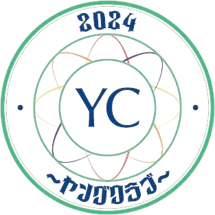
SERVICE 01 ── YOUNG CLUB
YC ── Young Club ／ 交流を深め、輪を広げる 会員制ビジネスコミュニティ
ＹＣが集う。
北の大地から、全国へ。
ＹＣ（ヤングクラブ）は、株式会社YOLOが主宰する会員制ビジネスコミュニティです。 経営者・フリーランスが集い、交流を深め、輪を広げる。札幌・小樽・旭川・函館・帯広・苫小牧の全国6拠点で、月に一度の定例会を開いています。
テーブル商談・個別商談・自社PRを通じて、業種を超えたつながりが生まれる場。
「北の大地を舞台に、全国へビジネスを広げる」。それが、ＹＣの掲げる想いです。
月1定例会・全国6拠点・会員制ビジネスコミュニティ
ピンをたどって、各会場の紹介へ
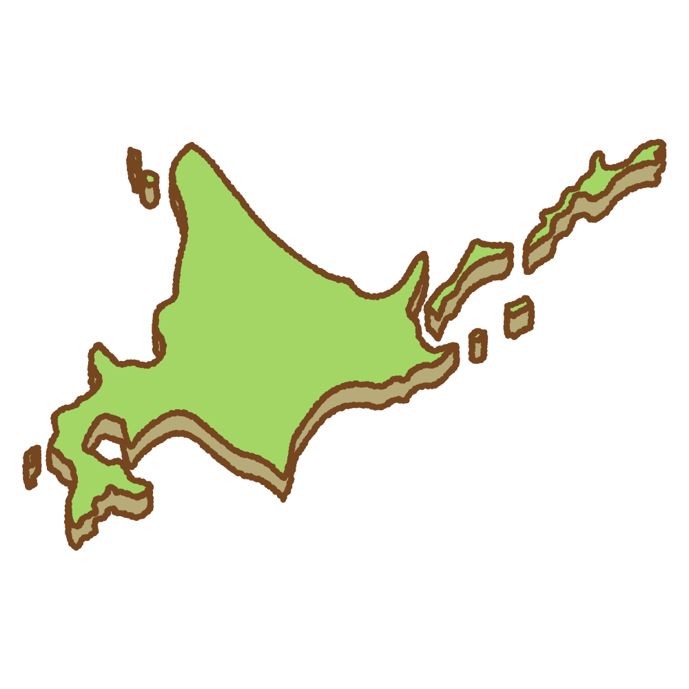
Chiefs ── 各会場の顔となる、個性豊かなリーダーたち
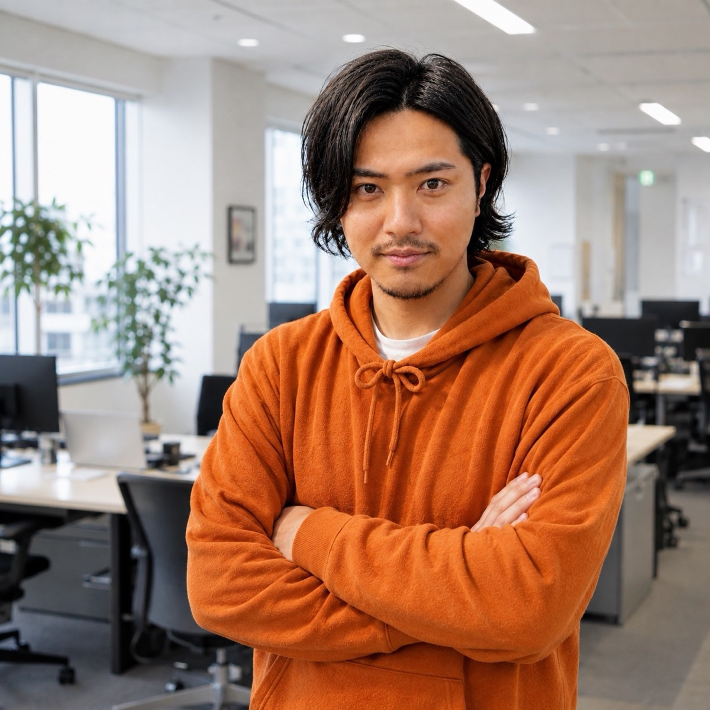
熱量、伝染。
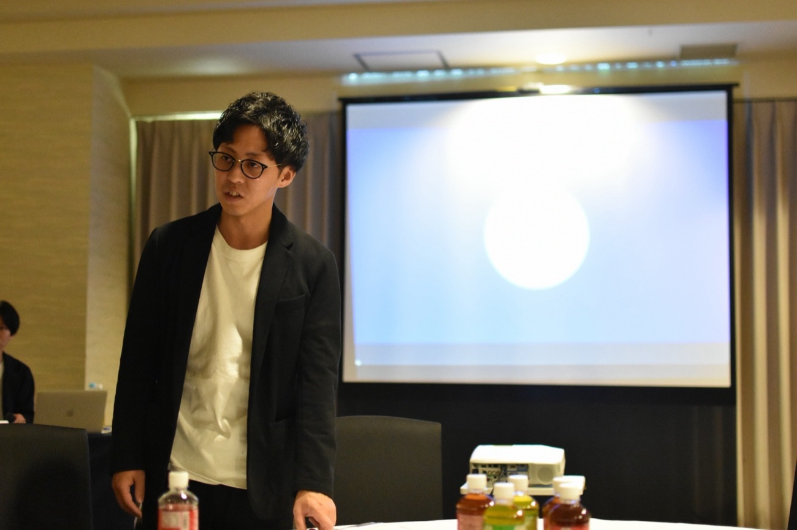
信頼できる仲間づくり。
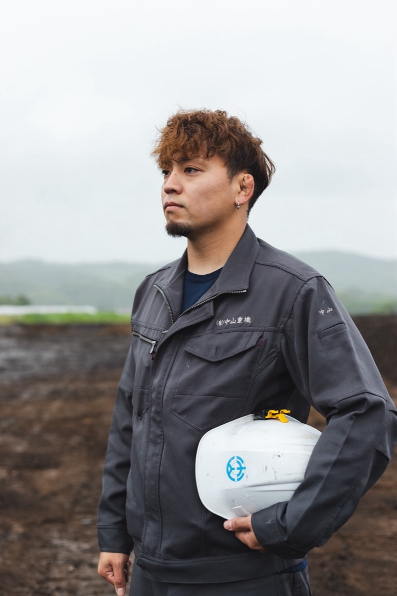
清野 侑亮
常に挑戦を。
@yc.hakodate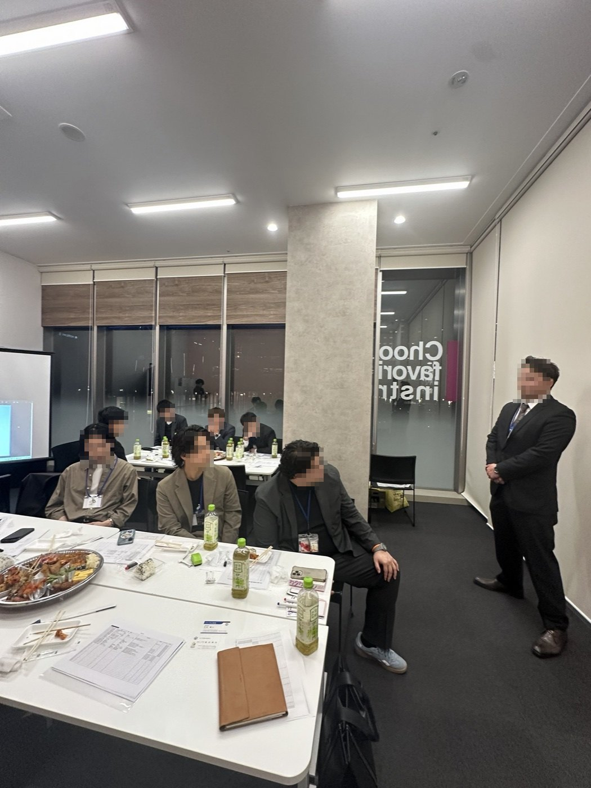
組合長 募集中
あなたの街に、ＹＣを。詳しくみる →
ＹＣは、新しい会場をともに立ち上げる組合長を全国で募っています。
NEW CHAPTERS WANTED
ＹＣは、新しい会場をともに立ち上げる組合長を全国で募集しています。
6つの会場は、それぞれの街の組合長から始まりました。次は、あなたの番です。
定例会の運営ノウハウ・進行の型を、立ち上げからまるごと共有します。
組合長は、その街の経営者の輪の中心。地元の商いを動かす存在になります。
6会場の組合長・会員ネットワークと接続。商圏が自分の街から全国へ広がります。
Gallery ── 月一定例会の風景
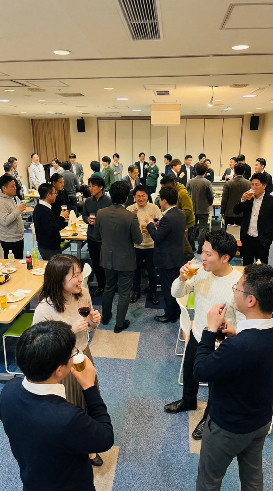
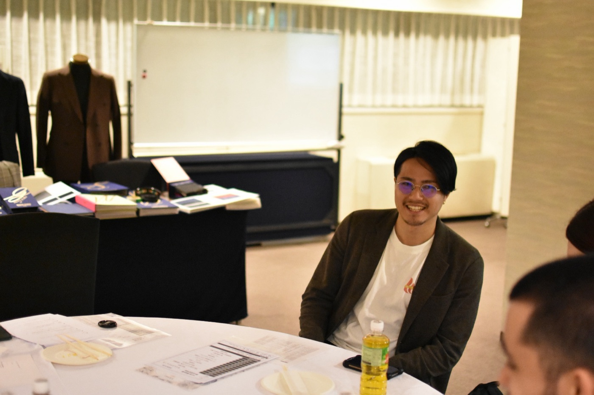
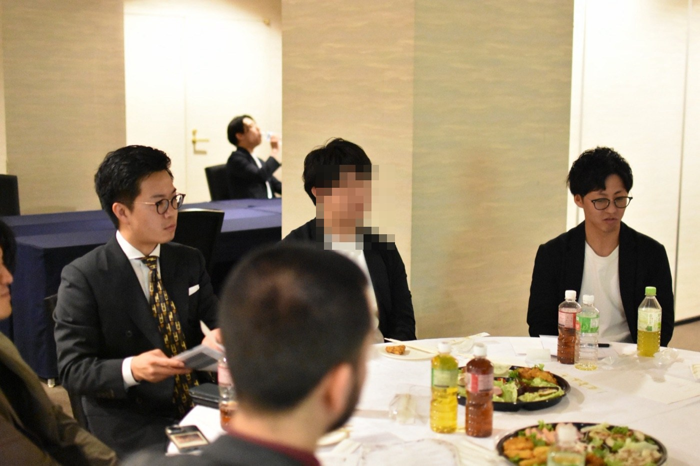
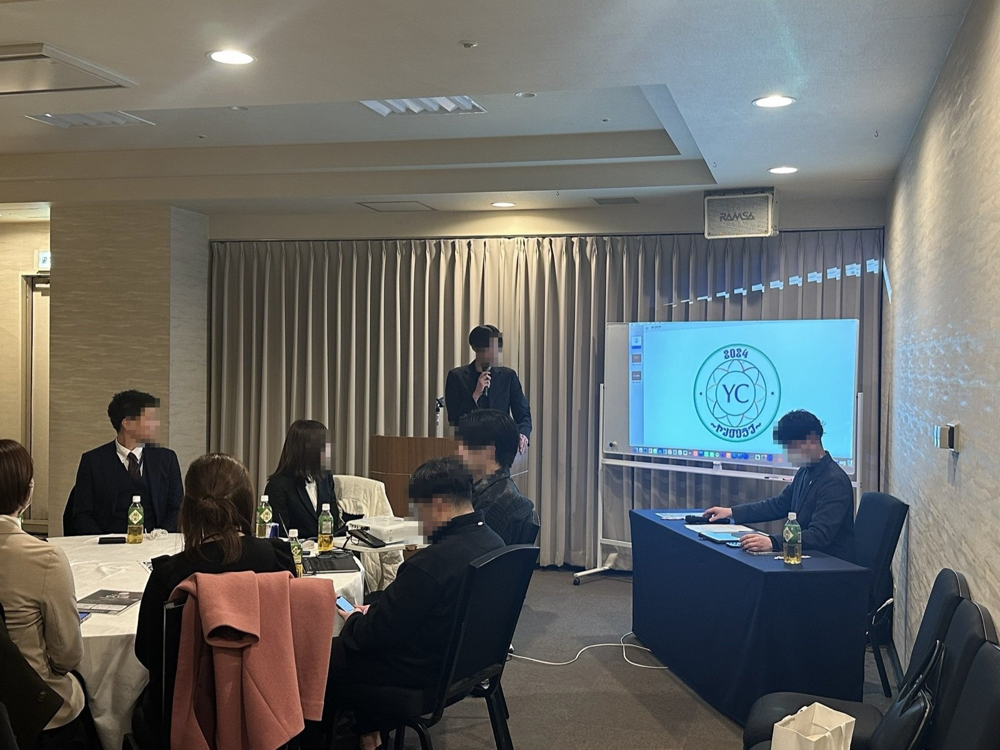
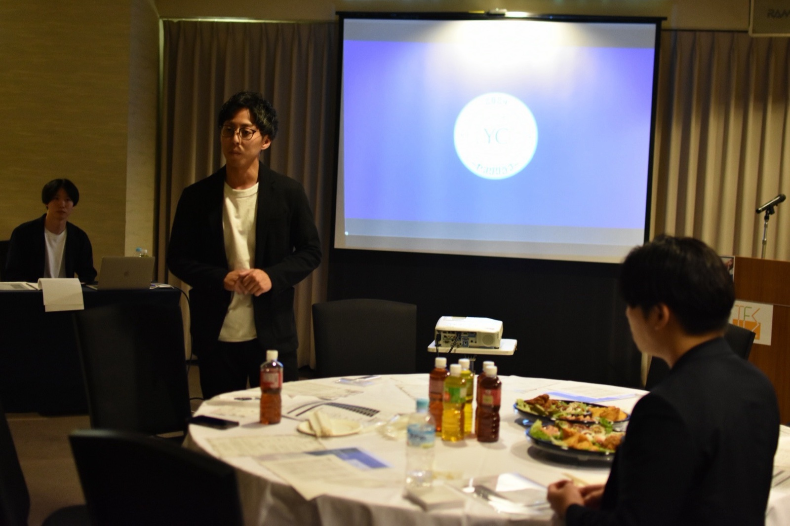
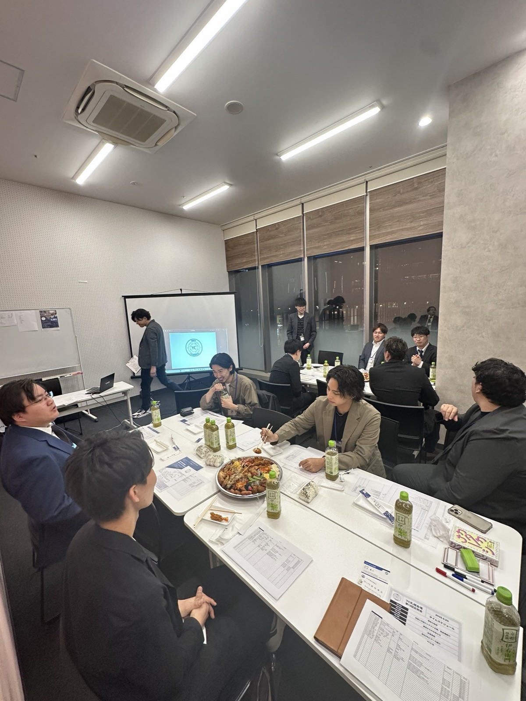